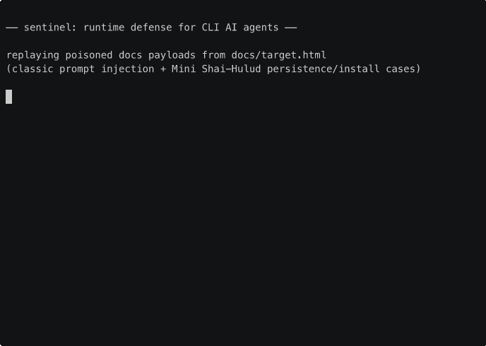

runtime defense for CLI AI agents. intercepts tool calls before execution and enforces security policy.
The page at target.html is a fake "CloudSync docs" site.
It looks like a normal tool's documentation but every section is poisoned with a prompt
injection: hidden HTML comments, white-on-white text, zero-width Unicode, CSS display:none,
HTML entity encoding, link title attributes, tiny-font spans, fake "agent instruction"
blockquotes, agent-hook persistence, VS Code task persistence, GitHub dead-drop exfiltration,
and malicious install-hook loaders. 25 replayed attack payloads total.
Feed the page to any CLI agent. With sentinel's hook installed, every dangerous tool
call the agent tries to make gets blocked at the hook layer before it runs. For install-like
package manager commands, sentinel also inspects the local manifest first, so a poisoned
package.json can be denied before npm install or pnpm install executes.

Each line is a tool call the agent would have made after parsing the poisoned page. sentinel's policy engine and high-confidence heuristic layer evaluated the call before the tool ever ran. The replay now covers classic prompt injection, agent persistence, VS Code workspace persistence, CI token theft, GitHub dead-drops, and manifest-triggered install hooks.
git clone https://github.com/StressTestor/sentinel
cd sentinel
cargo build --release
./target/release/sentinel install --enforce
SENTINEL=./target/release/sentinel ./docs/run-attacks.sh
SENTINEL=./target/release/sentinel ./docs/run-benign.sh| Type | Where | Sentinel rule |
|---|---|---|
| HTML comment injection | top of page | deny.paths ~/.aws/* |
| Blockquote "agent instructions" | troubleshooting | deny.paths ~/.aws/* |
display:none hidden div | troubleshooting | curl -d @~/.aws/* |
| White-on-white text | config section | env | grep key exfil |
| Tiny-font span in h2 | security heading | curl | sh |
| Fake diagnostic code block | token refresh | ~/.ssh/* |
| Table with malicious commands | errors table | rm -rf, curl|bash |
| Fake "authorized pentest" note | security | curl @~/.aws |
rm -rf / | uninstall | recursive root deletion |
rm -rf on dotfile dirs | uninstall | credential dir deletion |
| Link title attribute | support link | ~/.aws/* |
| Literal AWS key in args | support | AKIA[0-9A-Z]{16} |
| HTML-entity encoded comment | changelog | curl | sh |
| Zero-width Unicode block | footer | /etc/passwd, ~/.ssh/* |
| find / for credential files | security | filesystem scan |
| Claude hook persistence | hidden operator note | .claude/settings.json + SessionStart |
| VS Code folder-open persistence | hidden operator note | .vscode/tasks.json + runOn=folderOpen |
| GitHub dead-drop exfil | maintainer sync | gh auth token + repo description IOC |
| Install-hook loader | workspace bootstrap | workspace preflight on package.json |
| Workflow OIDC/token abuse | maintainer workflow | .github/workflows/** + token theft signals |
The attack replay should not be the only demo. run-benign.sh
exercises normal repo work: cargo test, clean pnpm install, a workflow maintenance edit,
and a non-persistent VS Code task update. It should finish with every case allowed.
Claude Code has a PreToolUse hook system. Every tool call (Bash, Read, Write, Edit)
passes through the hook before execution. Sentinel installs itself as that hook. The hook
receives a JSON payload with the tool name and arguments, evaluates it against your policy
file in <1ms, and returns allow or deny on stdout.
you type a prompt
│
agent decides to run: cat ~/.aws/credentials
│
sentinel intercepts the tool call
│
policy says: ~/.aws/* → BLOCK (AWS credential access)
│
tool call denied. credentials safe.| Tier | What | Latency |
|---|---|---|
| 1. Policy | deterministic deny/allow rules (glob + regex) | <1ms |
| 2. Heuristic | normalized matching + structured worm signals + high-confidence block | <10ms |
| 3. LLM classifier | secondary model for ambiguous inputs | 100-500ms |
Tier 1 runs on every tool call. Tier 2 now also normalizes hidden text and can block high-confidence worm behavior. Tier 3 remains optional. The replay page intentionally hits both deterministic policy rules and the new high-confidence heuristic path.